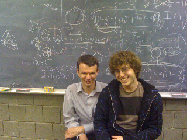

Erdös Lap Number
Definition:
- Paul Erdös has Erdös Lap Number 0.
- In order to acquire Erdös Lap Number i one has to sit on
a lap of a person with the number i-1.
NB: A proof (in a form of a
photo or a notary certification) is required for any claims.
| For example, Barbie Freidin
(née Benzer) has the Erdös Lap Number of 1. On this photo
(taken from the Fall
1996
issue
of
"Math PUrview") she is the leftmost epsilon. |
|
Therefore, Oleg Pikhurko gets
the the Erdös Lap Number 2. On the photo he is the O(1) (the O big
of one) sitting on Barbie's lap.
|
|
Open Question (Małgorzata Bednarska
$10): Does there exist a person whose
(usual) Erdös
Number = Erdös Lap Number =
1 ?
Peter Griztmann conjectured that the answer is "Yes" and that
János Pach is such a person. Unfortunately, even János
himself was not able to produce a proof that his Erdös Lap Number
is 1 (although he said that "it is a
reasonable conjecture").
The following photo (posted
by
János
Pach on Gil Kalai's blog) led some people to
believe that they have a promising approach to the proof.
However, Uncle Paul holds not János but his daughter...
The best known result towards the conjecture is that there is a person with Erdös Number 1 and Erdös Lap Number 2 (namely, Norbert Hegyvári):


 Theorem (Ron Graham): The Erdös lap
digraph contains a directed cycle!
Theorem (Ron Graham): The Erdös lap
digraph contains a directed cycle!
Proof
(presented by Ron at the Erdös Centennial Conference, 2013).

Further developments coming that direction:

The Erdös Lap Graph is
expanding!...
Erdos lap number 3 comes as an extra bonus for 21-484 "Graph Theory"
students:

Sometimes I'm recognized even in public transport :-)
{kind=link}
{kind=link}